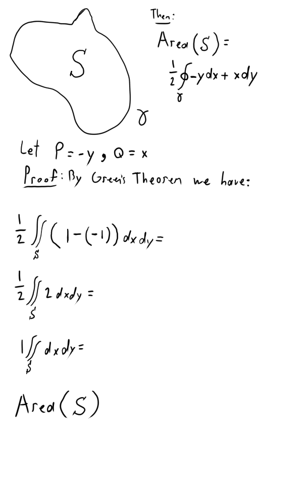

Created Saturday 04 July 2020
Let us start with a review of Green's Theorem.
So, we have the vector field  .
.
By the way, is a closed contour / line integral. Also, according to Wikipedia a line integral is, "an integral where the function to be integrated is evaluated along a curve."
Example
Calculate the line integral over the closed curve γ
γ = the unit circle that is oriented counter-clockwise.
By Green's Theorem, we get:
First, let us have the following:
Remember, the disk has a radius of 1 since γ is the unit circle. The area of a circle is . So, π * 1 = π. As such, the final result is 7π.
Also, you probably noticed that I changed D to Disk. That was to make it clear that it was representing the area of the disk i.e. the unit circle we are working with.
Also, another example I wrote out completely by hand:

Another Example
Back in Calculus 2, we had to find the area of a ellipse. We used polar coordinates and whatnot do to this. However, we now have an even easier way of doing this!
So then, let us find the area of the ellipse represented by:
If you're wondering why I made the S look all purple, I don't know. I did it for fun. The color doesn't mean anything.
Conservative Vector Fields
Time for some stuff we do a lot in physics.
Let
Def: We say that the vector field  is conservative if and only if there is a function (φ is known as 'phi' by the way) such that (remember, ∇ is the derivative). Then we say it is a conservative vector field.
is conservative if and only if there is a function (φ is known as 'phi' by the way) such that (remember, ∇ is the derivative). Then we say it is a conservative vector field.
The above is very important! Don't forget!
Now then, the function φ is called the potential function or the potential energy. This is from physics of course.
2nd Law of Newton: If γ(t) is a curve in  , then a particle of mass m moving on γ(t) satisfies the equation:
, then a particle of mass m moving on γ(t) satisfies the equation:
The second derivative of γ gives us acceleration.
Another Definition: The particle moving on γ(t) has kinetic energy such that .
Also, when he writes it's actually a vector. So in reality we have: 
Theorem
If is a conservative vector, a particle of mass m moving on γ(t) (which is the curve) under the 2nd Law of Newton, the sum of kinetic and potential energy is constant.
Proof:
Everything to the left of the + sign is for kinetic energy. Everything on the right of the + sign is for potential energy.
Now then, let's find the derivative of the above equation.
First, let's make things easy for ourselves by finding the derivative for the dot product from before like so:
With this, we can now work with the following:
Before we continue on, I want to note that we use the chain rule for finding the derivative of φ(γ(t)). That's why we end up with .
Also, remember that the vector field is  . With this knowledge, let us continue where we left off:
. With this knowledge, let us continue where we left off:
The gravity is conservative. Remember, that gravity is:
Potential energy is because:
Important Theorem
If  is a conservative vector field, and φ is its potential energy, and γ is a smooth path from point to point
is a conservative vector field, and φ is its potential energy, and γ is a smooth path from point to point  . Then we have the following line integral:
. Then we have the following line integral:
So, we have the potential energy at point b minus the potential energy at point a.
Now, does this remind you of anything?
...
...
...
I sure as hell can't remember.
Anyways, it's the fundamental theorem of calculus!
Moving forward now...
If we have a conservative then we have:
Regardless of the curve we follow to get from point a to b. Also, here is another integral:
As a consequence of that, we have the following:
If is a conservative vector field then we have:
The reason it's zero is because if γ is a closed simple curve then a and b should be equal.
Moving forward...
Take . Is this field conservative?
The answer is no. It is not. The reason is because if it was then there exists a . Then, we have (not gonna lie, I can't really see how he wrote this).
Checking if Vector Field is Conservative
If the previous is true, then it is conservative (or at least maybe). If it's not 0, then it is for sure not conservative.
Question: When a vector field is conservative, then:
If
So then, we see that for us to have a conservative vector field then this must hold:
Where
This also shows that the Jacobian is a symmetric matrix.
For the Converse
Poincare Lemma (I can hardly see what he wrote so I'm not sure if this is the right name)
Anyways, this lemma says the following:
If  is a differentiable vector field whose domain is an open ball in
is a differentiable vector field whose domain is an open ball in  and
and  then
then  is conservative.
is conservative.
Also, an open ball means there are no small holes in the domain.
Example
Let

We can check that the .
So it is conservative.
Now we have to find the potential function.
Let the potential function be .
Now then, we find that:
But!
So then,
must be equal to .
Finally, we find that:
Done
That's it! Congratulations on making it this far. We're completely done with all of the lectures. Guten luck on the final o7
{kind=link}
{kind=link}
{kind=link}
{kind=link}
{kind=link}
{kind=link}
{kind=link}
{kind=link}
{kind=link}
{kind=link}
{kind=link}
{kind=link}
{kind=link}
{kind=link}
{kind=link}
{kind=link}
{kind=link}
{kind=link}
{kind=link}
{kind=link}
{kind=link}
{kind=link}
{kind=link}
{kind=link}
{kind=link}
{kind=link}
{kind=link}
{kind=link}
{kind=link}
{kind=link}
{kind=link}
{kind=link}
{kind=link}
{kind=link}
{kind=link}
{kind=link}
{kind=link}
{kind=link}
{kind=link}
{kind=link}
{kind=link}
{kind=link}
{kind=link}
{kind=link}
{kind=link}
{kind=link}
{kind=link}